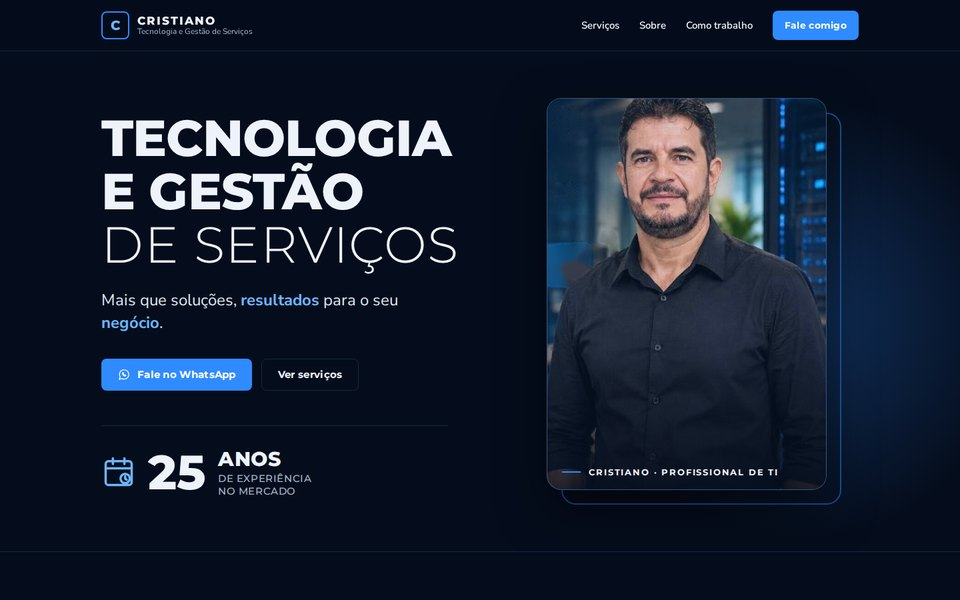
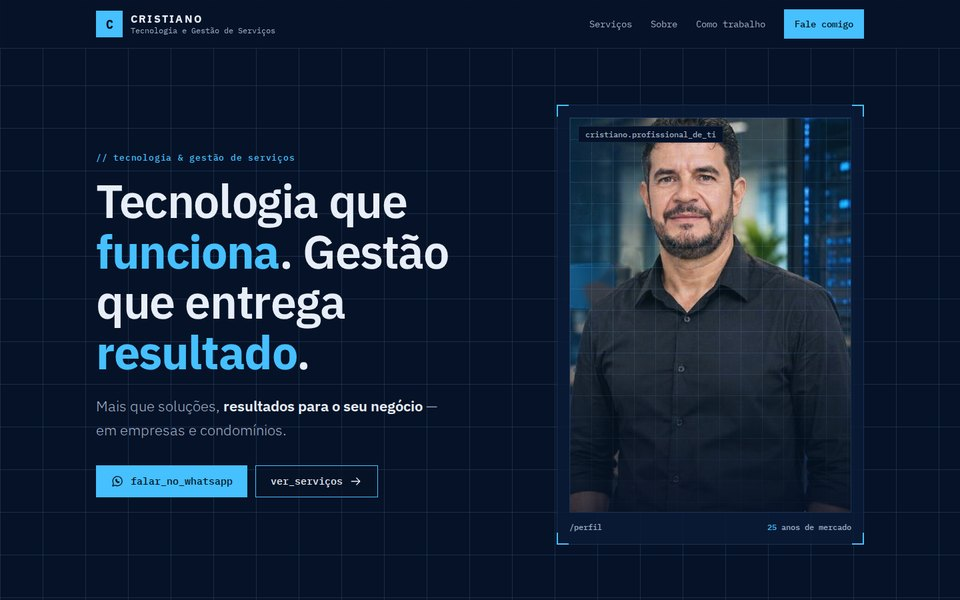

Bem-vindo
Qual modelo de site você gostaria de ver?
Escolha uma das versões abaixo para entrar.

Modelo 1
Noturno
Visual escuro e marcante, fiel ao cartaz: tipografia forte, destaques em azul e a frase em letra manuscrita.
Entrar no modelo 1
Modelo 3
Blueprint tech
Estilo técnico com grade azul, fonte de código e serviços numerados como uma ficha técnica.
Entrar no modelo 3